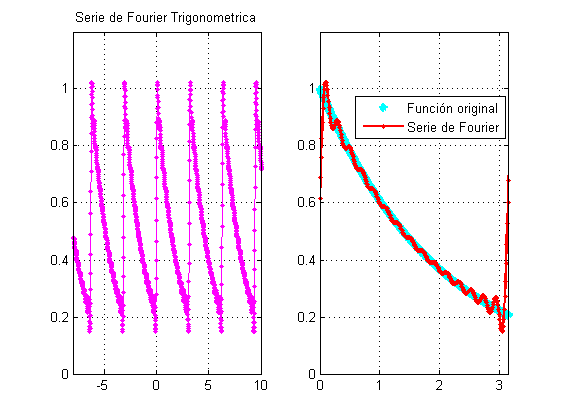
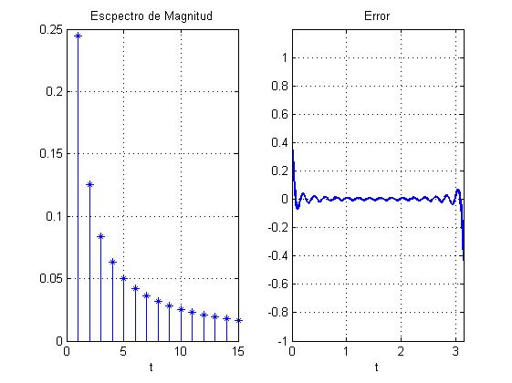
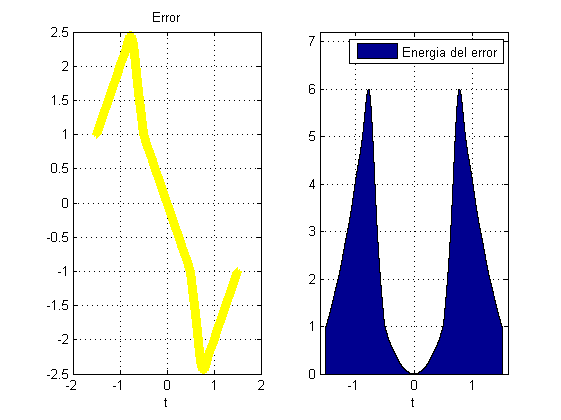
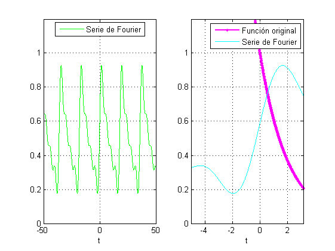
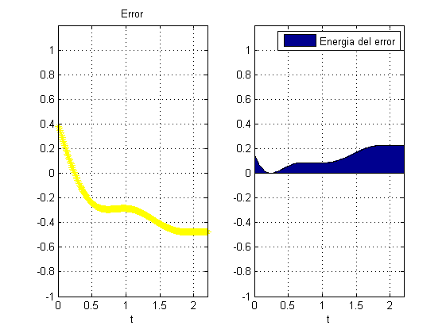

Contents
- P R Á C T I C A 5: SERIES DE FOURIER EN TIEMPO CONTINUO.
- E Q U I P O:
- O B J E T I V O S
- I N T R O D U C C I Ó N
- E J E M P L O 6.1 (Para 4 armonicos)
- E J E M P L O 6.1 (para 15 armonicos)
- E J E M P L O 6.2 (para 4 armonicos)
- E J E M P L O 6.2 (para 15 armonicos)
- E J E M P L O 6.4 (Para 4 armonicos)
- E J E M P L O 6.4 (para 15 armonicos)
- E J E M P L O 6.5 (Para 4 armonicos)
- E J E M P L O 6.5 (Para 15 armonicos)
- E J E M P L O 6.7 (Para 4 armonicos)
- E J E M P L O 6.7 (Para 15 armonicos)
- L A T H I C6.2
- R E F E R E N C I A S
P R Á C T I C A 5: SERIES DE FOURIER EN TIEMPO CONTINUO.
%
E Q U I P O:
- Andoney Valdes Daniel
- Castillo Silva Marlene Vanessa
O B J E T I V O S
- Realizar gráficas de series de Fourier exponenciales y trigonométricas en tiempo continuo
- Manipulación de instrucciones en MATLAB
- Calculo númerico de los coeficientes de Fourier
I N T R O D U C C I Ó N
Podemos calcular Dn con la DFT(Transformada Discreta de Fourier)la cuual utiliza muestras de una señal periodica x(t) durante el intervalo de su periodo, el intervalo de muestreo suele ser T segundos. Por esto hay N0=T0/T que es el número de muestras durante el periodo. (ver imagen uno)
En la práctica, es imposible hacer que T ? 0 pero podemos hacer que T sea pequeño, pero no cero, lo que hará que los datos aumenten sin límite. El error resultante de una T distinta de cero se denomina error de alias, por lo tanto, podemos expresar: (ver imagen 2)
imagen1(); imagen2();
E J E M P L O 6.1 (Para 4 armonicos)
eje1();
E J E M P L O 6.1 (para 15 armonicos)
eje1_2(); 
E J E M P L O 6.2 (para 4 armonicos)
ejem2();

E J E M P L O 6.2 (para 15 armonicos)
ejem2_2();
E J E M P L O 6.4 (Para 4 armonicos)
ejem4();
E J E M P L O 6.4 (para 15 armonicos)
ejem4_2();
E J E M P L O 6.5 (Para 4 armonicos)
ejem5();
E J E M P L O 6.5 (Para 15 armonicos)
ejem5_2();
E J E M P L O 6.7 (Para 4 armonicos)
ejem7();

E J E M P L O 6.7 (Para 15 armonicos)
ejem7_2();
L A T H I C6.2
C O D I G O
x = @(t) (mod(t+pi/2,2*pi)<=pi); t = linspace (-2*pi, 2*pi,1000); sumterms = zeros(16, length(t)); sumterms(1,:) = 1/2; for n = 1:size(sumterms,1)-1; sumterms(n+1,:) = (2/(pi*n)*sin(pi*n/2))*cos(n*t); end x_N = cumsum (sumterms); figure(1); clf; ind = 0; for N = [0,1:2:size(sumterms, 1)-1], ind = ind+1; subplot (3,3,ind); N=N+1; plot (t,x_N(N,:),'b.',t,x(t), 'r-'); axis ([-2*pi 2*pi -0.2 1.2]); xlabel ('t'); ylabel (['x_{',num2str(N),'} (t)']); end
R E F E R E N C I A S
- https://la.mathworks.com/help/symbolic/dirac.html
- https://la.mathworks.com/matlabcentral/answers/364925-plotting-dirac-delta-function-s-spectrum
- Lathi, Bhagwandas Pannalal, and Roger A. Green. Linear systems and signals. Vol. 2. New York: Oxford University Press, 2005.